전자계산기기사 (2011-10-09 기출문제)
1과목: 시스템 프로그래밍
1. 컴파일러 언어에 해당하지 않는 것은?
- COBOL
- C
- FORTRAN
- BASIC
(정답률: 65%)

2. 어셈블리어로 작성된 원시 프로그램이 실행되기까지의 과정으로 옳은 것은?
- 원시프로그램 → 어셈블링 → 목적프로그램 → 링크 → 로딩 → 실행
- 원시프로그램 → 어셈블링 → 목적프로그램 → 로딩 → 링크 → 실행
- 원시프로그램 → 링크 → 어셈블링 → 목적프로그램 → 로딩 → 실행
- 원시프로그램 → 어셈블링 → 링크 → 목적프로그램 → 로딩 → 실행
(정답률: 64%)
3. 절대 로더에서 연결(linking) 기능의 주체는?
- 프로그래머
- 컴파일러
- 로더
- 어셈블러
(정답률: 77%)
4. 프로세서가 일정시간 동안 자주 참조하는 페이지의 집합을 의미하는 것은?
- Prepaging
- Thrashing
- Locality
- Working Set
(정답률: 82%)
5. 시스템의 성능 평가 기준과 거리가 먼 것은?
- 신뢰도
- 반환시간
- 비용
- 처리능력
(정답률: 69%)
6. 서브루틴에서 자신을 호출한 곳으로 복귀시키는 어셈블리어 명령은?
- SUB
- RET
- MOV
- INT
(정답률: 65%)
7. 일반적인 로더에 가장 가까운 것은?
- Dynamic Loading Loader
- Absolute Loader
- Direct Linking Loader
- Compile And Go Loader
(정답률: 62%)
8. 매크로 프로세서의 기능에 해당하지 않는 것은?
- 매크로 정의 인식
- 매크로 정의 치환
- 매크로 정의 저장
- 매크로 호출 인식
(정답률: 73%)
9. 페이지 교체 알고리즘 중 한 프로세스에서 사용되는 각 페이지마다 카운터를 두어 현시점에서 가장 오랫동안 사용되지 않은 페이지를 제거하는 것은?
- LFU
- LRU
- OPT
- FIFO
(정답률: 67%)
10. 어셈블러에 의하여 독자적으로 번역된 여러 개의 목적 프로그램과 프로그램에서 사용되는 내장 함수들을 하나로 모아서 컴퓨터에서 실행될 수 있는 실행 프로그램을 생성하는 역할을 하는 것은?
- linkage editor
- library program
- pseudo instruction
- reserved instruction set
(정답률: 80%)
11. 시스템 소프트웨어에 해당하지 않는 것은?
- Compiler
- Word Processor
- Macro Processor
- Operating System
(정답률: 73%)
12. 어떤 기호적 이름에 상수값을 할당하는 어셈블리어 명령은?
- EQU
- ORG
- INCLUDE
- END
(정답률: 73%)
13. 다중 프로그래밍 시스템에서 어떤 프로세서가 아무리 기다려도 결코 발생하지 않을 사건을 기다리고 있을 때, 그 프로세스는 어떤 상태라고 볼 수 있는가?
- Deadlock
- Working Set
- Semaphore
- Critical Section
(정답률: 85%)
14. 기억장치 배치 전략에 해당하지 않는 것은?
- First Fit
- High Fit
- Best Fit
- Worst Fit
(정답률: 72%)
15. 기계어에 대한 설명으로 옳지 않은 것은?
- 컴퓨터가 이용할 수 있는 0과 1만으로 명령을 표현한다.
- 컴퓨터의 내부구성과 종류에 따라 의존성을 가진다.
- 전문적인 지식이 없어도 수정, 보완, 변경이 가능하다.
- 처리속도가 빠르다.
(정답률: 70%)
16. 어셈블리 언어를 두 개의 Pass로 구성하는 주된 이유는?
- 한 개의 Pass만을 사용하는 경우는 프로그램의 크기가 증가하여 유지보수가 어려움
- 한 개의 Pass만을 사용하는 경우는 프로그램의 크기가 증가하여 처리속도가 감소함
- 한 개의 Pass만을 사용하는 경우는 기호를 모두 정의한 뒤에 해당 기호를 사용해야 함
- pass1과 Pass2를 사용하는 경우는 프로그램이 작아서 경제적임
(정답률: 74%)
17. 로더의 종류 중 다음 설명에 해당하는 것은?
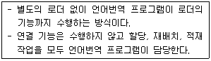
- 절대 로더
- Compile And Go 로더
- 직접 연결 로더
- 동적 적재 로더
(정답률: 75%)
18. 프로그램 실행을 위하여 메모리 내에 기억공간을 확보하는 작업은?
- allocation
- linking
- loading
- compile
(정답률: 79%)
19. 라이브러리에 기억된 내용을 프로시저로 정의하여 서브루틴으로 사용하는 것과 같이 사용할 수 있도록 그 내용을 현재의 프로그램 내에 포함시켜 주는 어셈블리어 명령은?
- INCLUDE
- CREF
- ORG
- EVEN
(정답률: 67%)
20. 다음 중 로더(Loader)의 기능이 아닌 것은?
- Allocation
- Link
- Relocation
- Compile
(정답률: 77%)
2과목: 전자계산기구조
21. 다음 10진수 중 2421 코드로 표시된 1011과 같은 값은?
- 4
- 5
- 6
- 7
(정답률: 73%)
22. 다음 중 수치적 연산이 아닌 것은?
- 로테이트
- 산술적 시프트
- 덧셈
- 나눗셈
(정답률: 63%)
23. 10110101이라는 이진 자료가 2's complement 방식으로 표현되어 있다. 이를 우측으로 3비트만큼 산술적 이동(Arithmetic shift) 하였을 때의 결과는?
- 11110110
- 11010110
- 10000110
- 00010110
(정답률: 53%)
24. 중앙처리장치는 4가지 단계를 반복적으로 거치면서 동작을 수행하게 되는데 이에 속하지 않는 것은?
- Fetch Cycle
- Execute Cycle
- Indirect Cycle
- Branch Cycle
(정답률: 53%)
25. 채널을 이용한 입출력 제어 방식의 특징이 아닌 것은?
- 다양한 입출력장치와 단말장치를 동시에 독립해서 동작시킬 수 없다.
- 입출력 동작을 중앙처리장치와는 독립적이면서 비동기적으로 실행한다.
- 멀티프로그래밍이 가능하다.
- 대용량 보조기억장치를 입출력정차와 같은 레벨로 중앙처리장치와 독립해서 동작시킬 수 있다.
(정답률: 32%)
26. 주기억장치는 하드웨어의 특성상 주기억장치가 제공할 수 있는 정보 전달능력에 한계가 있는데, 이 한계를 무엇이라 하는가?
- 주기억장치 전달(transfer)
- 주기억장치 접근폭(accesswidth)
- 주기억장치 대역폭(bandwidth)
- 주기억장치 정보전달폭(transferwidth)
(정답률: 53%)
27. 인터럽트의 발생 요인이 아닌 것은?
- 정전
- 처리할 데이터 양이 많은 경우
- 컴퓨터가 제어하는 주변 상황에 이상이 있는 경우
- 불법적인 인스트럭션 수행과 같은 프로그램 상의 문제가 발생한 경우
(정답률: 74%)
28. 소프트웨어에 의한 인터럽트 처리의 우선순위 체제가 가진 특성으로 가장 거리가 먼 것은?
- 융통성이 있다.
- 경제적이다.
- 정보량이 매우 적은 시스템에 적합하다.
- 반응속도가 느리다.
(정답률: 42%)
29. 65536 워드(word)의 메모리 용량을 갖는 컴퓨터가 있다. 프로그램 카운터(PC)는 몇 비트인가?
- 8
- 16
- 32
- 64
(정답률: 47%)
30. 명령어 형식에서 수행할 데이터가 저장된 곳을 나타내는 부분은?
- 오퍼랜드(operand)
- op-코드(operation code)
- 인덱스 레지스터(index register)
- 베이스 레지스터(base register)
(정답률: 59%)
31. 다음 단위 중에서 가장 큰 자료 표현 단위는?
- bit
- nibble
- word
- file
(정답률: 74%)
32. RISC(reduced instruction set computer)의 특징에 대한 설명 중 틀린 것은?
- 주로 마이크로프로그램 제어방식 사용
- 명령어 숫자의 최소화
- 주소지정 방식의 최소화
- 각 명령어는 대부분 단일 사이클에 수행됨
(정답률: 32%)
33. 컴퓨터에서 사용하는 명령어를 기능별로 분류할 때 동일한 분류에 포함되지 않는 것은?
- JMP(Jump 명령)
- ADD(Addition 명령)
- ROL(Rotate Left 명령)
- CLC(Clear Carry 명령)
(정답률: 57%)
34. 다음 중 Associative 기억장치의 특징으로 옳은 것은?
- 일반적으로 DRAM보다 값이 싸다.
- 구조 및 동작이 간단하다.
- 명령어를 순서대로 기억시킨다.
- 저장된 정보에 대해서 주소보다 내용에 의해 검색한다.
(정답률: 67%)
35. 바이트 머신의 데이터 형식을 표시한 다음은 어떤 데이터 형식을 표시한 것인가?
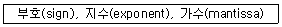
- 고정소수점 데이터(fixed point data)
- 가변장 논리 데이터(variable length logical data)
- 부동소수점 데이터(floating point data)
- 팩(pack) 형식의 10진수(decimal number)
(정답률: 65%)
36. 10진수 -456을 PACK 형식으로 표현한 것은?
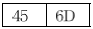
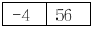
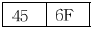
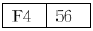
(정답률: 57%)
37. 병렬 처리(parallel processing)와 관계없는 용어는?
- 벡터 프로세서
- 파이프라인 프로세싱
- MIMD
- Multiple Phase Clock
(정답률: 45%)
38. 프로그램 상태 워드(program status word)에 대한 설명으로 옳은 것은?
- 시스템의 동작은 CPU 안에 있는 program counter에 의해 제어된다.
- interrupt 레지스터는 PSW의 일종이다.
- CPU의 상태를 나타내는 정보를 가지고, 독립된 레지스터로 구성된다.
- PSW는 8bit의 크기이다.
(정답률: 43%)
39. 연산 결과를 항상 누산기(Accumulator)에 저장하는 명령어 형식은?
- 0-주소 명령어
- 1-주소 명령어
- 2-주소 명령어
- 3-주소 명령어
(정답률: 70%)
40. 인터럽트의 병렬 우선순위에 대한 설명으로 틀린 것은?
- 폴링에 의해 어느 입출력 장치가 인터럽트를 요구했는지 찾는다.
- 반응시간이 빠르지만 비경제적이다.
- 우선순위는 레지스터 비트의 위치에 따라 결정된다.
- 마스크 레지스터를 이용하여 각 인터럽트의 요구를 조절할 수 있다.
(정답률: 12%)
3과목: 마이크로전자계산기
41. Dynamic RAM에 관한 설명 중 맞는 것은?
- Static RAM의 경우보다 Access time이 빠르다.
- 위치에 따라 access time이 다르므로 엄밀하게 말하면 random access가 아니다.
- 빠른 처리 속도가 필요한 소규모 외부 캐시 기억장치에 주로 사용한다.
- 집적도가 높고, 가격이 저렴하다.
(정답률: 71%)
42. 마이크로프로그램과 거리가 가장 먼 것은?
- 마이크로 인스트럭션으로 구성되어 있다.
- 제어장치에 이용하는 경향이 있다.
- 마이크로프로그램은 중앙처리장치에 기억된다.
- 대규모 집적회로의 이용이 가능해서 제어기의 비용이 절감된다.
(정답률: 59%)
43. A/D 변환기의 오차를 나타내는 것이 아닌 것은?
- 분해능(resolution)
- 오프셋(offset)
- 이득(gain)
- 비선형(integral non-lineality)
(정답률: 58%)
44. 마이크로컴퓨터의 시스템 소프트웨어 중 사용자가 작성한 프로그램을 실행하면서 에러를 검출하고자 할 때 사용되는 것은?
- 로더(loader)
- 디버거(debugger)
- 컴파일러(compiler)
- 텍스트 에디터(text editor)
(정답률: 71%)
45. 설계비용을 줄이기 위하여 가끔 마이크로프로세서보다 액세스타임이 긴 메모리를 이용한다. 이 때 데이터의 전송을 원활히 해주기 위해 사용되는 것은?
- HALT
- WAIT
- INTERRUPT
- POLLING
(정답률: 30%)
46. 플래그(flag) 레지스터가 나타내는 상태가 아닌 것은?
- carry의 발생
- 연산결과의 부호
- 인덱스(index) 레지스터의 증감 상태
- overflow의 발생
(정답률: 40%)
47. 어느 마아크로프로세서의 instruction cycle 중 fetch cycle의 마이크로 명령을 순서 없이 기술한 것이다. 가장 먼저 수행되는 것부터 순서대로 나열한 것은?
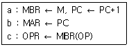
- b → c → a
- b → a → c
- c → b → a
- c → a → b
(정답률: 53%)
48. 명령 레지스터(Instruction Register)의 기능에 해당되는 것은?
- Flags를 저장한다.
- 명령어 주소를 갖는다.
- 특정 주소 방식에서 사용된다.
- Op-code를 저장한다.
(정답률: 27%)
49. R/W, RESET, INT와 같은 신호는 마이크로 전자계산기의 어느 부분과 관련이 있는가?
- 주변 버스(peripheral bus)
- 제어 버스(control bus)
- 주소 버스(address bus)
- 데이터 버스(data bus)
(정답률: 65%)
50. 다음 설명은 어느 것과 연관이 있는가?
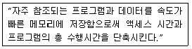
- Associative Memory
- Virtual Memory
- Secondary Memory
- Cache Memory
(정답률: 60%)
51. 마이크로컴퓨터 시스템을 개발하는데 사용하는 디버거로 intel사의 등록상표인 것은?
- JTAG
- socket
- In-Circuit Emulator
- PowerVT Terminal Emulator
(정답률: 54%)
52. 다음은 산술논리장치(ALU)에 대한 상태 플래그들이다. A = 0010 0001과 B = 1111 1111을 산술논리장치에 의해 A+B를 실행한 후 각 플래그의 상태는? (단, 2의 보수로 저장 및 연산한다.)
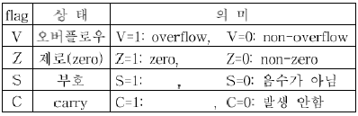
- V=0, Z=1, S=0, C=1
- V=0, Z=0, S=1, C=1
- V=0, Z=0, S=0, C=0
- V=0, Z=1, S=0, C=0
(정답률: 35%)
53. 고속데이터 전송에 적합한 입출력 방식은?
- interrupt I/O
- programmed I/O
- DMA
- dynamic I/O
(정답률: 58%)
54. 시프트 레지스터(shift register)의 입출력 방식 중 시간이 가장 적게 걸리는 것은?
- 직렬입력-직렬출력
- 직렬입력-병렬출력
- 병렬입력-직렬출력
- 병렬입력-병렬출력
(정답률: 55%)
55. 마이크로프로그램 제어 명령어(Micro-program Control Instruction) 중에서 번지가 필요없는 무번지 명령은?
- SKP(skip)
- BR(branch)
- AND(and)
- CALL(call)
(정답률: 73%)
56. 메모리와 입출력 장치를 구별하는 제어선이 필요없는 입출력 주소지정 방식은?
- memory mapped I/O
- isolated I/O
- interrupt I/O
- programmed I/O
(정답률: 40%)
57. 상대주소 지정방식(Relative Addressing Mode)에서 오프셋(Offset)이 1바이트이면 사용 가능한 영역은?
- (현 PC 위치 - 128) ~ (현 PC 위치 + 127)
- (현 PC 위치) ~ (현 PC 위치 + 256)
- (현 PC 위치 - 256) ~ (현 PC 위치)
- (현 PC 위치 - 128) ~ (현 PC 위치 + 128)
(정답률: 64%)
58. 마이크로칩 기술의 발전 속도에 관한 법칙으로 마이크로 칩에 저장할 수 있는 데이터의 양이 18개월마다 2배씩 증가한다는 것은?
- 황의 법칙
- 멧칼프의 법칙
- 수확체증의 법칙
- 무어의 법칙
(정답률: 67%)
59. 컴퓨터와 주변장치 사이에서 데이터 전송시에 입출력 주기나 완료를 나타내는 2개의 제어신호를 사용하여 데이터 입출력을 하는 방식은?
- strobe 방법
- polling 방법
- interrupt 방법
- handshaking 방법
(정답률: 47%)
60. 한 플랫폼에서 작동하도록 되어 있는 프로그램을 다른 플랫폼에서 작동하도록 수정하는 것을 무엇이라고 하는가?
- 시뮬레이팅(Simulating)
- 오퍼레이팅(Operating)
- 포팅(Porting)
- 디버깅(Debugging)
(정답률: 56%)
4과목: 논리회로
61. 다음 회로가 나타내는 것은?
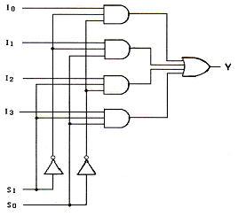
- 4 by 1 multiplexer
- 2 by 4 decoder
- 3 by 8 decoder
- 4 by 2 multiplexer
(정답률: 70%)
62. T 플립플롭 3개를 종속 접속한 후 입력주파수 800[Hz]를 인가하면 출력주파수는?
- 8[Hz]
- 10[Hz]
- 80[Hz]
- 100[Hz]
(정답률: 50%)
63. 지연시간 50[ns]의 플립플롭을 사용한 5단의 리플카운터가 있다. 카운터의 동작 최고주파수는?
- 1[MHz]
- 4[MHz]
- 10[MHz]
- 20[MHz]
(정답률: 18%)
64. 자기 보수 코드(self complement code)가 아닌 것은?
- 5중 2 코드
- 2421 코드
- 3-초과 코드
- 51111 코드
(정답률: 37%)
65. 다음 불 함수(boolean function) F를 합의 곱(product of sum) 형으로 간략화한 논리식은?
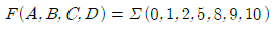
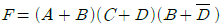
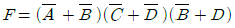
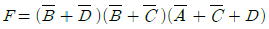
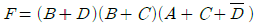
(정답률: 40%)
66. 다음 논리식 중 틀린 것은?
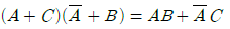
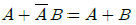
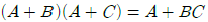
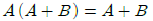
(정답률: 42%)
67. 다음 식을 쌍대(duality)식으로 표시한 것은?
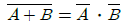
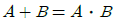
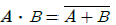
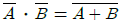
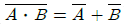
(정답률: 48%)
68. 전가산기(Full Adder)의 구성은?
- 반가산기 2개, OR 게이트 1개
- 반가산기 2개, OR 게이트 2개
- 반가산기 2개, AND 게이트 1개
- 반가산기 2개, AND 게이트 2개
(정답률: 58%)
69. 플립플롭의 동작 특성 중 클록펄스가 상승에지변이 이후에도 입력값이 변해서는 안되는 일정한 시간을 의미하는 것은?
- 전파지연시간+홀드시간+설정시간
- 전파지연시간
- 홀드시간
- 설정시간
(정답률: 72%)
70. 다음 그림의 회로 명칭은?
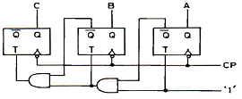
- 2진 가산계수기
- 2진 가산계수기
- 8진 감산계수기
- 8진 가산계수기
(정답률: 45%)
71. 논리식
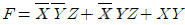
를 간략화하면?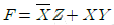
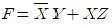
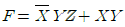
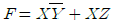
(정답률: 53%)
72. 그림과 같은 구성도는 어떤 플립플롭인가?
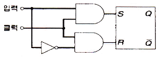
- RST 플립플롭
- JK 플립플롭
- D 플립플롭
- T 플립플롭
(정답률: 50%)
73. 그림과 같이 입력 A, B, C의 파형을 가할 때 출력 X의 파형을 얻을 수 있다면, 이 게이트의 명칭은?
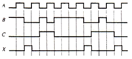
- AND 게이트
- OR 게이트
- NAND 게이트
- NOR 게이트
(정답률: 57%)
74. 다음 그림과 같은 회로는?
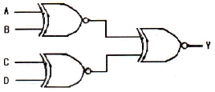
- 우수 패리티 발생기
- 짝수 패리티 검사회로
- 홀수 패리티 검사회로
- 멀티플렉서
(정답률: 48%)
75. 병렬 2진 가산기에 두 개의 입력 A, B' 및 올림수 Ci를 다음 그림과 같이 인가한다면 수행되는 출력 F의 기능은?
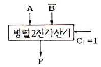
- 올림수를 포함한 덧셈(Addition width carry)
- 뺄셈(Subtraction)
- 증가(Increment)
- 감소(Decrement)
(정답률: 53%)
76. 두 입력 A와 B를 비교하여 B>A 및 A=B이면 출력(Y)이 1, 그리고 A>B이면 출력(Y)이 0이 되는 논리회로를 설계할 때 조건을 만족하는 회로는?
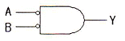
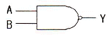
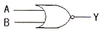
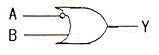
(정답률: 59%)
77. 다음과 같이 동작하는 소자는?
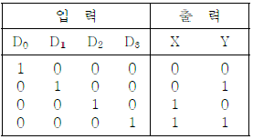
- 인코더
- 디코더
- MUX
- DEMUX
(정답률: 50%)
78. 다음 중 병렬 가산기의 특징으로 옳은 것은?
- 가격이 직렬 가산기에 비해 저렴하다.
- carry bit를 위한 기억소자가 필요하다.
- 입력단자수가 n개라면 출력단자수는 2n개이다.
- 연산처리가 직렬 가산기에 비해 빠르다.
(정답률: 70%)
79. 비동기형 5진 계수회로 설계시 필요한 최소 플립플롭 수는?
- 1개
- 2개
- 3개
- 4개
(정답률: 73%)
80. 그레이 코드(Gray Code)의 설명으로 옳지 않은 것은?
- 반사 코드이다.
- 오류 발생시 오차가 적다.
- 연산에 이용할 수 있는 코드이다.
- 1비트만 변하면 인접해 있는 새로운 코드를 얻을 수 있다.
(정답률: 60%)
5과목: 데이터통신
81. 다음이 설명하고 있는 것은?
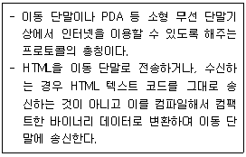
- HTTP
- FTP
- SMTP
- WAP
(정답률: 69%)
82. 음성 전화망과 같이 메시지가 전송되기 전에 발생지에서 목적지까지의 물리적 통신회선 연결이 선행되어야 하는 교환 방식은?
- 메시지 교환 방식
- 데이터그램 방식
- 회선 교환 방식
- ARQ 방식
(정답률: 56%)
83. TCP/IP 모델 중 응용계층 프로토콜에 해당하지 않은 것은?
- TELNET
- SMTP
- ROS
- FTP
(정답률: 58%)
84. 피기백(Piggyback) 응답이란 무엇인가?
- 송신측이 대기시간을 설정하기 위한 목적으로 보낸 테스터 프레임용 응답을 말한다.
- 송신측이 일정한 시간 안에 수신측으로부터 ACK가 없으면 오류로 간주하는 것이다.
- 수신측이 별도의 ACK를 보내지 않고 상대편으로 향하는 데이터 전문을 이용하여 응답하는 것이다.
- 수신측이 오류를 검출한 후 재전송을 위한 프레임 번호를 알려주는 응답이다.
(정답률: 67%)
85. 회선을 제어하기 위한 제어 문자 중 실제 전송할 데이터 집합의 시작임을 의미하는 것은?
- SOH
- STX
- SYN
- DLE
(정답률: 64%)
86. 다음이 설명하고 있는 디지털 전송 신호의 부호화 방식은?
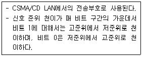
- Alternating Mark Inversion 코드
- Manchester 코드
- Bipolar 코드
- Non Return to Zero 코드
(정답률: 69%)
87. 다음이 설명하고 있는 라우팅 프로토콜은?
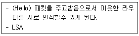
- SMTP
- OSPF
- RIP
- ICMP
(정답률: 60%)
88. 다음이 설명하고 있는 프로토콜은?
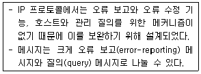
- IGMP(Internet Group Management Protocol)
- ICMP(Internet Control Management Protocol)
- BOOTP(Bootstrap Protocol)
- IPv4(Internet Protocol version 4)
(정답률: 60%)
89. HDLC(High-level Data Link Control)에서 링크 구성 방식에 따른 세가지 모드에 해당되지 않는 것은?
- NRM
- ABM
- SBM
- ARM
(정답률: 57%)
90. 다음이 설명하고 있는 오류제어 방식은?
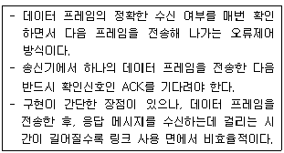
- Stop-and-Wait ARQ
- Go-back-N ARQ
- Selective-Repeat ARQ
- Forward-Stop ARQ
(정답률: 67%)
91. 회선 교환 방식의 특징으로 틀린 것은?
- 정보량이 적은 경우에 유리하다.
- 경제적인 통신망 구성이 용이하다.
- 접속 절단 과정이 필요하므로 정보전달에 시간이 걸린다.
- 두 지점간의 정보량이 많을 때 유리하다.
(정답률: 50%)
92. X.25와 OSI 참조 모델의 관계에서 X.25가 적용되는 OSI 참조 모델 계층은?
- 물리 계층
- 데이터링크 계층
- 네트워크 계층
- 전송 계층
(정답률: 6%)
93. 전송 데이터가 있는 동안에만 시간 슬롯을 할당하는 다중화 방식은?
- 통계적 시분할 다중화
- 광파장 분할 다중화
- 동기식 시분할 다중화
- 주파수 분할 다중화
(정답률: 50%)
94. CSMA/CD에서 사용되는 LAN 표준 프로토콜은?
- IEEE 802.3
- IEEE 802.4
- IEEE 802.5
- IEEE 802.12
(정답률: 50%)
95. 다음이 설명하고 있는 에러 체크 방식은?
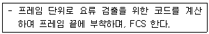
- LRC(Longitudinal Redundancy Check)
- VRC(Vertical Redundancy Check)
- CRC(Cyclic Redundancy Check)
- ARQ(Automatic Repeat Request)
(정답률: 71%)
96. 송신측과 수신측 사이를 직접 연결하지 않고 송신측으로 부터의 데이터를 교환기에 저장한 다음 수신측을 연결하여 데이터를 전송하는 방식은?
- 직접 회선
- 분기 회선
- 집선 분기 회선
- 축적 교환
(정답률: 56%)
97. HDLC의 프레임 형식 중 프레임 수신 확인, 프레임의 전송 요구, 그리고 프레임 전송의 일시 연기요구와 같은 제어 기능을 수행하는 프레임은?
- 정보(Information) 프레임
- 감시형식(Supervisory) 프레임
- 비번호(Unnumbered) 프레임
- Flag 프레임
(정답률: 45%)
98. ARP(Address Resolution Protocol)에 대한 설명으로 틀린 것은?
- 네트워크에서 두 호스트가 성공적으로 통신하기 위하여 각 하드웨어의 물리적인 주소문제를 해결해 줄 수 있다.
- 목적지 호스트의 IP 주소를 MAC 주소로 바꾸는 역할을 한다.
- ARP 캐시를 사용하므로 캐시에서 대상이 되는 IP 주소의 MAC 주소를 발견하면 이 MAC 주소가 통신을 위해 바로 사용된다.
- ARP 캐시를 유지하기 위해서는 TTL 값이 0이 되면 이 주소는 ARP 캐시에서 영구히 보존된다.
(정답률: 73%)
99. 순방향 오류 정정(Forward Error Correction)에 사용되는 오류 검사 방식은?
- 수평 패리티 검사
- 군 계수 검사
- 수직 패리티 검사
- 해밍 코드 검사
(정답률: 78%)
100. 동기식 전송을 하는 HDLC 프레임의 형식으로 옳지 않은 것은?
- 8비트 길이의 플래그
- 8비트 또는 16비트의 제어영역
- 가변 길이의 정보영역
- 48비트의 FCS부
(정답률: 48%)